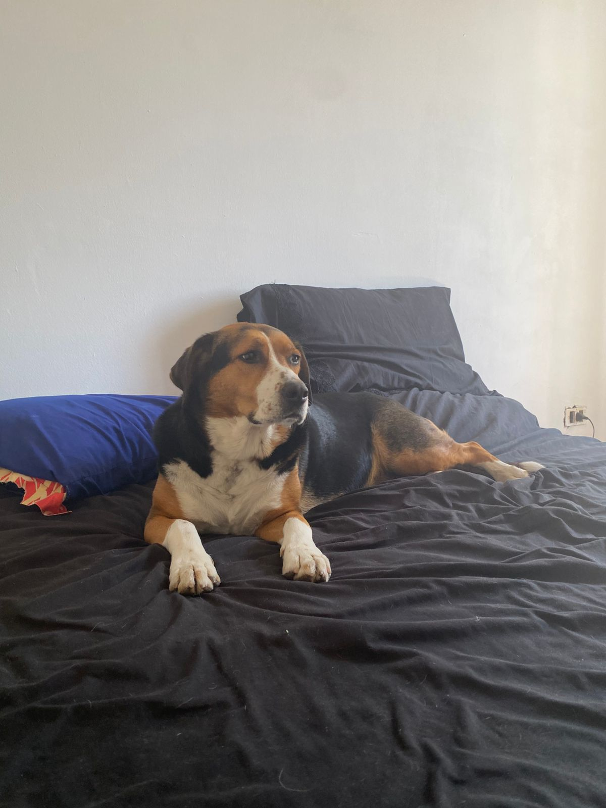
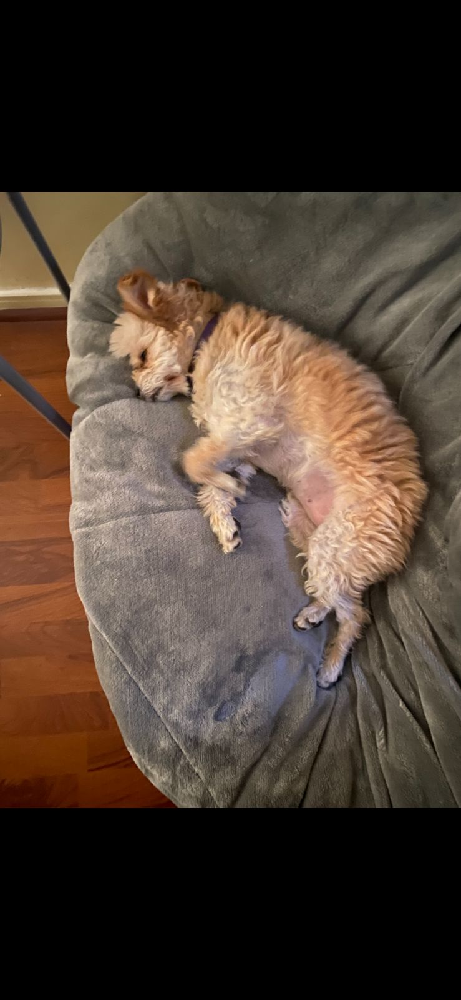

Puchi es mi mejor amiga
Quien es puchi y que es puchi, es un osito que encontramos en la calle y lo llevamos para la casa puchi se parece a un perro como este:

Foto de Puchi
Puchi acostada en la cama

Foto de Canela la hermana de Puchi
Canelilla la gordilla esta acostada en un puff

Cosas que les gusta a las gorditas:
- El pollito
- Salir a pasear
- Dormir todo el día

Cosas que odian las perritas:
- Ir a bañarse
- Los medicamentos escondidos en la comida
- Que les digan que son adoptadas